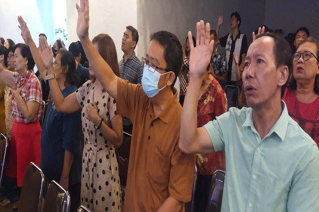
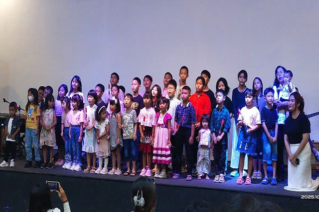
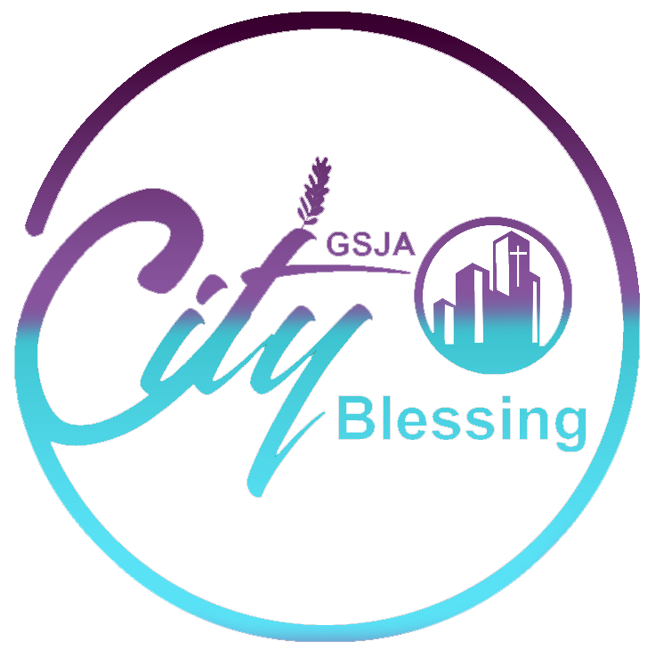

SELAMAT DATANG DI RUMAH TUHAN
Ada tempat untukAnda di sini.
Bertumbuh dalam iman. Bersekutu dalam kasih.

CITY BLESSINGGEREJA SIDANG JEMAAT ALLAHDaftar Jemaat ↗Seluruh jadwal dalam WIB · Teluknaga, Tangerang
Bersekutu dalam kasih bersama keluarga besar jemaat.
Baptisan, pernikahan, penyerahan anak, dan tempat untuk melayani.
Setiap Minggu untuk anak-anak, 07.00 dan 09.15.
Setiap Sabtu sore, bersama generasi muda.
Pendampingan doa dan konseling pastoral yang rahasia.
Bertumbuh dalam kebenaran, bersekutu dalam kasih, bekerja untuk misi, menuju kesempurnaan Kristus. Di GSJA City Blessing, kami rindu menjadi gereja yang relevan dan menjadi berkat bagi sesama.
Daftarkan diri dan keluarga Anda sebagai jemaat GSJA City Blessing. Data akan dikonfirmasi oleh admin gereja.
Daftar Jemaat ↗Baru pertama kali datang? Tim kami siap membantu Anda.
Jl. Raya Kampung Melayu Barat, Gg. Gupo Pondok Wetan, RT. 002 RW. 002 No. 38
Teluknaga, Tangerang, Banten 15510